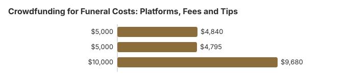

Crowdfunding for Funeral Costs: Platforms, Fees and Tips
When a death is sudden, a crowdfunding page can bring in money within days. It also comes with fees, timing gaps, and tax questions that families rarely have time to research. This page focuses on the practical math and the order of steps, so the funds arrive when the funeral home needs them.
What a fundraiser actually nets
GoFundMe charges no platform fee for personal U.S. fundraisers; it deducts a transaction fee of 2.9% + $0.30 per donation, and donors may add an optional tip to GoFundMe (GoFundMe pricing, checked October 21, 2026). The per-donation $0.30 means many small gifts cost proportionally more than a few large ones.
| Raised | Donations | Fees | You receive |
|---|---|---|---|
| $5,000 | 50 × $100 | $145 + $15 = $160 | $4,840 |
| $5,000 | 200 × $25 | $145 + $60 = $205 | $4,795 |
| $10,000 | 100 × $100 | $290 + $30 = $320 | $9,680 |

Our calculations use GoFundMe's published U.S. rate. Other platforms price differently; compare their current fee pages before choosing.
Timing: funeral homes often want payment up front
GoFundMe says transfers reach a bank account 2 to 5 business days after leaving the platform, and bank details must be verified first (GoFundMe). Ask the funeral home early whether it will accept a deposit now and the balance when funds arrive, or whether it can be set up as the fundraiser's beneficiary so it is paid directly.
Taxes
The IRS says crowdfunded money given out of generosity, with nothing given in return, is generally a gift and not taxable income to the recipient. Money received in exchange for goods or services can be taxable (IRS: Crowdfunding and taxes). Donors usually can't deduct gifts to a specific family, because deductions apply to qualified organizations, not individuals (IRS Publication 526).
Writing the page
- State the goal and what it covers, using the funeral home's written statement (the itemized statement the FTC Funeral Rule requires) as the basis.
- Name who controls the money and how leftover funds will be used.
- Post an update when the funeral bill is paid. Donors trust pages that report back.
Before you set a goal, use the itemized prices to cut what you don't need. Our payment assistance guide lists benefits that may reduce the amount you need to raise.
How a funeral fundraiser actually works
Crowdfunding for a funeral is a public request for gifts. It is not an assistance program, it is not taxed by a rule we can state for every campaign, and it is not a reason to skip the General Price List. This page is the how-to. The zero-budget guide is what to do if the campaign fails, and the payment-assistance guide is the government and charity list.
Fees: read the live page, do not trust a remembered percentage
GoFundMe publishes its current pricing at gofundme.com/c/pricing. The company has changed that schedule before. Open the page the day you launch and write down the platform fee and the payment-processing fee it shows that day. Other sites, including Facebook fundraisers, publish their own schedules. A percentage copied from an old article is how families overstate what they will net. If the platform lets donors add a tip, that tip is not part of your total.
Write the appeal so strangers can act
- Name the person, the city, and the relationship of the organizer in the first two lines. Anonymous campaigns read as scams.
- Say what the money is for in plain language: direct cremation, a burial plot, travel for relatives. You do not have to post the full invoice.
- Give one number you can support. A sound anchor is a written quote, or the NFDA 2023 median you are using only as context ($8,300 for a viewing and burial, or $2,645 for direct cremation with the family's container). Label the median as a national median, not as your bill.
- Name who withdraws the money and into which account. Fights inside the family start here.
- Post one photo the person would have accepted. Do not post the death certificate or a hospital scene.
Who actually shares it
The first day depends on people who already know the family: a workplace, a congregation, a team. Ask three people by name to share it, and ask them the same day. A link dropped into a group chat with no request dies. Update the page when you have a figure for what has arrived, and close it when the bill is paid. Leaving a completed campaign open invites skepticism.
If the money comes up short, or comes up as a tax question
A campaign can stall at a few hundred dollars. Have the next step ready: direct cremation from a second funeral home's price list, a county indigent program, or the Social Security $255 payment if a spouse or eligible child can file Form SSA-8. Whether the gifts are taxable income depends on facts we will not generalize. The IRS discusses gifts in Publication 525 and related pages. Ask a tax preparer if the campaign is large or if a stranger organized it and kept control of the account.
Do not sign a funeral contract for a package you cannot cancel while you wait on donations. Ask the home what is due today to proceed with a direct cremation, and what can wait. The Funeral Rule still lets you buy only the items you choose.
Sources for this section, checked October 22, 2026: GoFundMe pricing page (read live; not copied here as a percentage); NFDA 2023 medians; SSA-8; IRS Publication 525. Educational only. Confirm the forms, fees, and eligibility discussed on Crowdfunding for Funeral Costs: Platforms, Fees and Tips with the agency or a licensed professional.
The week after you publish the funeral fundraiser
The first update should be short: what has come in, what the funeral home still needs in writing, and whether the plan is still direct cremation or has changed. People who gave money are owed that, and a silent page looks abandoned. Do not post the General Price List in full if it shows account numbers or a relative's phone. A sentence is enough: the home's written total, labeled as a quote, with the NFDA 2023 direct-cremation median of $2,645 (family-supplied container, latest available) labeled as national context rather than as your bill.
Withdrawals should match the purpose you wrote. Rent, a headstone, and a relative's airfare are different promises. If you change the purpose, say so on the page the same day. The person whose name is on the bank account is the one a donor will ask. Give that person the funeral contract and the platform's payout receipt, and keep both with the estate papers.
If a donor asks whether the gift is deductible, do not guess. A gift to a family is not the same thing as a gift to a charity. IRS Publication 525 is the discussion to hand them, and a tax preparer is the person who applies it. This crowdfunding guide does not quote a platform fee. The live GoFundMe pricing page is the fee schedule it points to, and the link was checked on October 22, 2026.
Frequently Asked Questions
What does GoFundMe charge for a funeral fundraiser?
For U.S. personal fundraisers, there is no platform fee; a transaction fee of 2.9% plus $0.30 is deducted from each donation (as of October 21, 2026). Donors can add an optional tip.
Is money raised for a funeral taxable?
The IRS says crowdfunded money given as a gift, with nothing provided in return, is generally not taxable income to the recipient. Consult a tax professional for your situation.
Can donors deduct a funeral GoFundMe donation?
Generally no. The IRS allows a deduction only for gifts to qualified organizations, and gifts to individuals, including a family raising money for a funeral, are not deductible (IRS Publication 526). GoFundMe's own help center says donations to personal fundraisers are treated as personal gifts, and that only fundraisers for a certified nonprofit produce a tax-deductible receipt.
If deductibility matters to donors, set up a fundraiser for a charity tied to the person instead, and check that the charity is eligible on the IRS Tax Exempt Organization Search. A donor who gives $250 or more to a charity also needs a written acknowledgment from it to claim the deduction, and only donors who itemize get any tax benefit.
Sources
- GoFundMe: Pricing and fees
- IRS: Some things to know about crowdfunding and taxes
- IRS Publication 526
- FTC Funeral Rule, 16 CFR Part 453
Sources checked October 21, 2026. This is general information, not legal or tax advice; platform fees and the tax treatment of gifts can change, so check the platform's current terms and ask a tax professional about your situation.
Disclaimer: Information only, not professional advice. Full disclaimer.